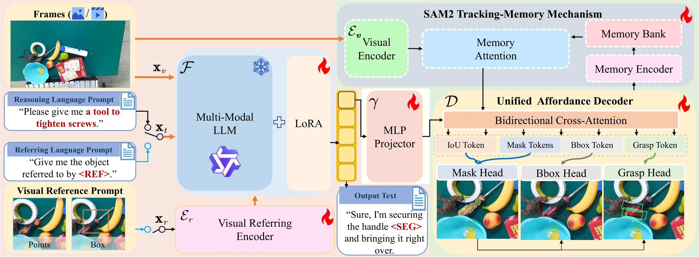
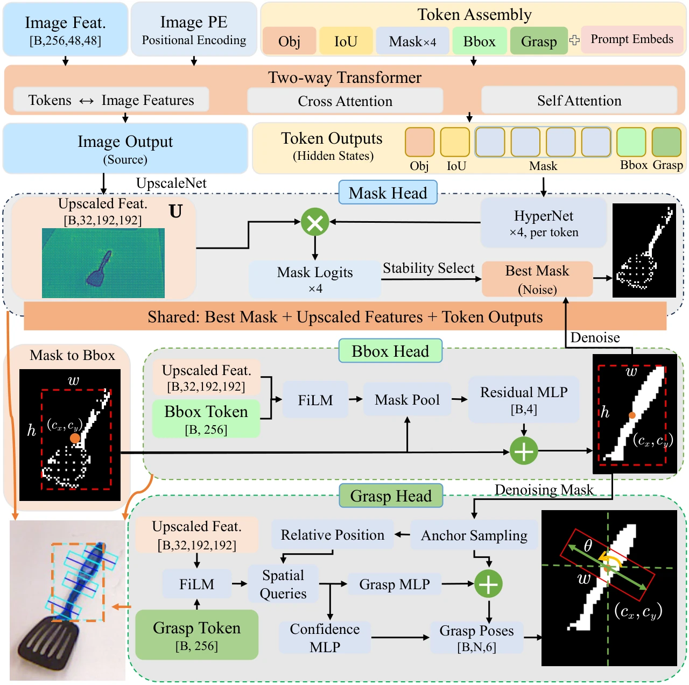
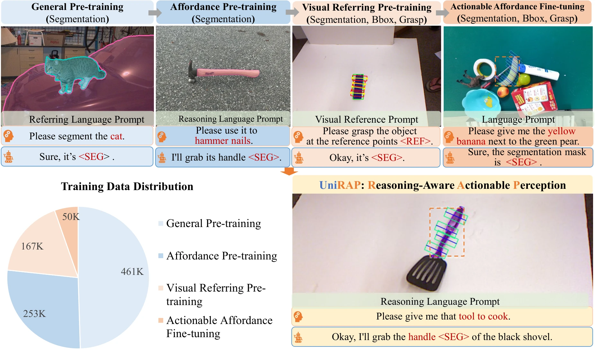
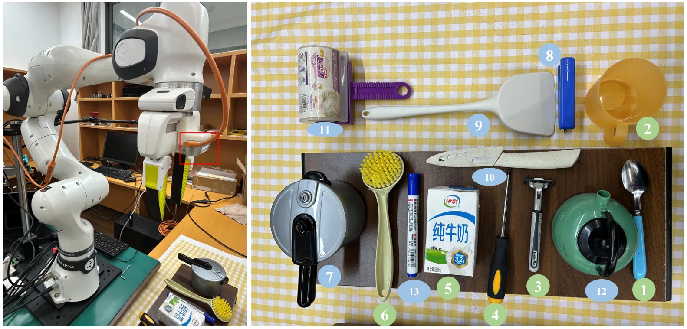

01
Unified interfaces
Text, points, and boxes share a token-level interface for reasoning over both images and videos.
From linguistic intent to pixel-level affordances and executable contact geometry—in one unified model.
1Tongji University 2IEIT SYSTEMS 3NAIS, Neusoft Corporation
4The University of Queensland *Corresponding author
Vision-language perception has made impressive progress in aligning language with visual observations, yet grounding high-level semantics into part-level physical interaction remains challenging. UniRAP is a unified model that maps language instructions to actionable geometric representations. Through a unified interface token mechanism, it integrates images or videos, textual instructions, and optional visual prompts into a shared spatiotemporal representation space.
A Unified Affordance Decoder jointly predicts object detections, part-level affordance masks, and 4-DoF interaction poses. A curriculum transfer strategy then adapts the model from general visual parsing to interaction-aware perception, improving data efficiency when high-quality interaction labels are scarce.
Text, points, and boxes share a token-level interface for reasoning over both images and videos.
One decoder produces bounding boxes, part-level masks, and precise 4-DoF interaction poses.
Four progressive stages bridge abundant segmentation data and scarce interaction annotations.

<REF> and <SEG> interfaces, then decoded into masks, detections, and 4-DoF poses.The UAD reuses dense segmentation features for three coupled tasks. Mask evidence initializes region geometry; task-specific tokens condition shared visual features; consistency constraints let detection and contact prediction refine one another.


UniRAP performs consistently across referring segmentation, affordance grounding, video reasoning, and fine-grained interaction prediction.
Gray column groups denote zero-shot benchmarks. Best results among the displayed methods are highlighted.
| Method | Size | HANDAL | GraspNet Seen | GraspNet Novel | 3DOI | ||||
|---|---|---|---|---|---|---|---|---|---|
| gIoU | cIoU | gIoU | cIoU | gIoU | cIoU | gIoU | cIoU | ||
| LISA | 7B | 15.4 | 11.8 | 17.7 | 17.7 | 25.2 | 24.1 | 21.5 | 13.7 |
| UniPixel | 7B | 26.0 | 16.4 | 45.0 | 12.5 | 48.0 | 11.5 | 41.5 | 24.9 |
| RAGNet | 7B | 60.5 | 60.3 | 63.3 | 64.0 | 45.6 | 33.2 | 37.4 | 37.4 |
| UniRAP | 3B | 63.9 | 65.7 | 70.6 | 64.1 | 51.6 | 42.3 | 52.1 | 37.5 |
| Method | Size | HANDAL Easy | HANDAL Hard | 3DOI | |||
|---|---|---|---|---|---|---|---|
| gIoU | cIoU | gIoU | cIoU | gIoU | cIoU | ||
| LISA | 7B | 15.5 | 11.9 | 12.3 | 8.1 | 12.3 | 8.1 |
| UniPixel | 7B | 26.7 | 15.7 | 24.5 | 11.6 | 38.5 | 21.0 |
| RAGNet | 7B | 58.3 | 58.1 | 58.2 | 57.8 | 38.1 | 39.4 |
| UniRAP | 3B | 63.2 | 64.1 | 62.9 | 63.8 | 55.7 | 54.5 |
| Method (3B) | Seen Seg. Fβ / Grasp gAcc | Similar Seg. Fβ / Grasp gAcc | Novel Seg. Fβ / Grasp gAcc |
|---|---|---|---|
| Qwen2.5-VL + SFT | 76.2 / 1.7 | 75.4 / 2.1 | 46.2 / 1.5 |
| RealVLG-R1 (GRPO) | 83.9 / 40.3 | 84.1 / 31.9 | 49.4 / 17.1 |
| RealVLG-R1 (GSPO) | 88.7 / 33.6 | 85.0 / 30.6 | 49.1 / 9.1 |
| UniRAP | 92.0 / 56.7 | 89.4 / 56.7 | 75.8 / 63.3 |
UniRAP reaches state-of-the-art results on referring expression segmentation at the 3B scale and remains competitive with larger models, while maintaining strong temporal consistency for video queries.
On explicit and reasoning-based affordance segmentation, UniRAP improves generalization to unseen objects. On zero-shot 3DOI, it raises gIoU and cIoU by 17.6 and 15.1 points over RAGNet.
Examples extracted from the UniRAP supplementary presentation. Videos load only when they approach the viewport.
A Franka FR3 with an eye-in-hand RealSense D435i directly executes UniRAP's predicted 4-DoF poses across 13 household objects and both referring and reasoning prompts.

overall grasp success rate compared with RealVLG-R1 (3B), across 10 trials per object.
@inproceedings{li2026unirap,
title = {UniRAP: Towards Unified Part-level Physical Affordance Reasoning and Actionable Perception},
author = {Li, Linfei and Hu, Ruining and Zhang, Lin and Wang, Zhong and Zhang, Fengyi and Shen, Ying and Wang, Binqiang and Zhang, Xin},
booktitle = {Advances in Neural Information Processing Systems},
year = {2026}
}